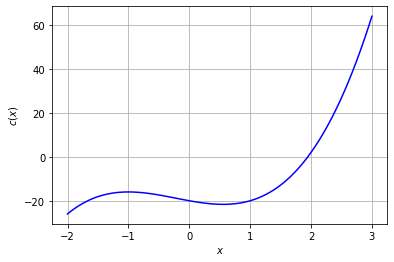
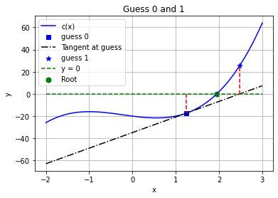
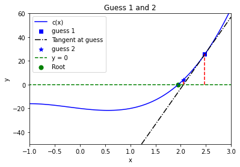
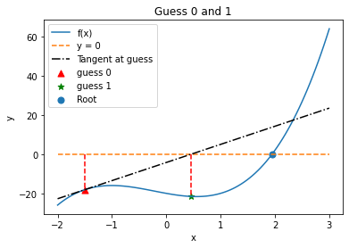
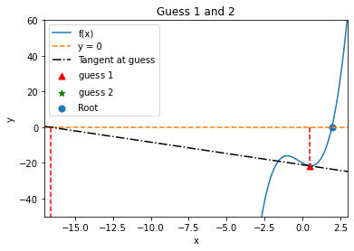
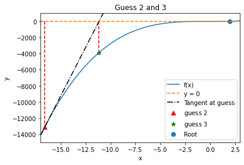

Solving Systems of Nonlinear Equations with Newton’s Method
Contents
Solving Systems of Nonlinear Equations with Newton’s Method¶
CBE 20258. Numerical and Statistical Analysis. Spring 2020.
© University of Notre Dame
Learning Objectives¶
After studying this notebook, completing the activities, and asking questions in class, you should be able to:
Understand how Newton’s Method iterates through a function to approximate a root solution.
Generalize Newton’s Method in code.
Motivation¶
In this class, we will learn about a family of algorithms that quickly and reliably converges to a numeric value for \(x\) that satisfies \(c(x) = 0\) from an initial guess \(x_0\).
a.k.a. Newton-type methods produce good approximations for roots of real-valued functions using an iterative process.
Newton’s Method (aka Newton-Raphson Method) with an Example¶
Review Canonical Form¶
In a previous notebook, we discussed canonical form, \(c(x) = 0\), for a system of linear equations. Here, \(c(x)\) is a mathematical function that depends on variable \(x\). \(c(\cdot)\) can be linear or nonlinear. \(x\) can be a scalar or vector.
We say \(c(x) = 0\) is a square system if the number of variables equals the number of equations, i.e., there are zero degrees of freedom. In this notebook, we will focus on square systems. In a future notebook, we will talk about optimization problems which have extra degrees of freedom (more variables than equations).
Home Activity
Answer the following short answer questions below to review canonical form.
Multiple Choice If \(x\) is a three dimensional vector and \(c(x) = 0\) is a square system, then…
\(c(x)\) returns a scalar
\(c(x)\) returns a two dimensional vector
\(c(x)\) returns a three dimensional vector
None of the above.
Record your answer as an integer in the Python variable ans_bi1.
# Add your solution here
# Removed autograder test. You may delete this cell.
We say a function is vector valued if it returns a vector and scalar valued if it returns a scalar.
Multiple Choice Which is the following is canonical form for the equation \(x^2 - 1/x = 2\)?
\(x^2 - 1/x - 2 = 0\)
\(\frac{x^3 - 2x - 1}{x} = 0\)
\(2 x^2 - 2/x - 4 = 0\)
All of the above are canonical form
Store your answer as an integer in the Python variable ans_bi2.
# Add your solution here
# Removed autograder test. You may delete this cell.
Main Idea Through an Example¶
An example is the easiest way to understand Newton’s method. Let’s find a root, i.e., values for \(x\) that satisfy \(c(x)=0\), for the following equation:
Chemical Engineering Application: In Thermodynamics, you will learn about cubic equations of state. These are cubic polynomials in volume \(V\) (or equivalently compressibility \(Z\)) that accurately predict many important quantities (enthalpy, entropy, fugacity) for a wide range of mixtures. In fact, you can predict the equilibrium coefficients \(K\) in flash calculations with a cubic equation of state. But we won’t “steal the thunder” of cubic equations of state right now. We’ll just focus on the generic math problem above for simplicity.
We will start by plotting the function \(c(x)\).
import numpy as np
import matplotlib.pyplot as plt
#this next line is only needed in iPython notebooks
%matplotlib inline
def nonlinear_function(x):
''' compute a nonlinear function for demonstration
Arguments:
x: scalar
Returns:
c(x): scalar
'''
return 3*x**3 + 2*x**2 - 5*x-20
Np = 100
X = np.linspace(-2,3,Np)
plt.plot(X,nonlinear_function(X),label="c(x)",color="blue")
plt.grid(True)
plt.xlabel("$x$")
plt.ylabel("$c(x)$")
plt.show()

Home Activity
Based on the plot above, answer the following short answer questions.
Multiple Choice How many real and imaginary roots are there for \(c(x)\)?
One real root and two imaginary roots
Three real roots
Two real roots and one imaginary root
One real root and no imaginary roots
No real or imaginary roots
None of the above
Record your answer as an integer in the Python variable ans_bii1.
# Add your solution here
# Removed autograder test. You may delete this cell.
Numeric Answer What is the real root for c(x) = 0 based on the plot? Approximate your answer to 1 decimal point and record in the Python variable ans_bii2.
### BEGIN SOLUTION
ans_bii2 = 1.9
## END SOLUTION
# Removed autograder test. You may delete this cell.
Algorithm Steps and Iteration 1¶
We will start Newton’s method at the initial guess \(x_0 = 1.25\).
For each iteration of the algorithm, we will do the following steps:
Construct a tangent line at the current guess
Solve the tangent line (a linear system!) to compute a new guess
Check if our guess is “close enough” to the true solution to stop
The Python code below does the first two steps described above. We’ll talk about good stopping criteria, i.e., knowing when we are “close enough”, soon.
guess = 1.25
print("Guess 0 =",guess, "(initial)")
# plot function again
plt.plot(X,nonlinear_function(X),label="c(x)",color="blue")
# plot original guess
plt.scatter(guess,nonlinear_function(guess),label="guess 0",
marker="s", s=30,color="blue")
### construct tangent line
# calculate slope with finite difference perturbation
slope = (nonlinear_function(guess) - nonlinear_function(guess-.0001))/(.0001)
# plot tanget plane centered at guess
plt.plot(X,nonlinear_function(guess) + slope*(X-guess),
'k-.', label="Tangent at guess")
### calculate new guess and plot
new_guess = guess-nonlinear_function(guess)/slope
plt.scatter(new_guess,nonlinear_function(new_guess),label="guess 1",
marker="*", s=50,color="blue")
print("Guess 1 =",new_guess)
### draw lines to guide eye
# horizontal line at y=0
plt.plot(X,0*X,"--",label="y = 0",color="green")
# vertical line from guess to y=0 line
plt.plot(np.array([guess,guess]),
np.array([0,nonlinear_function(guess)]),'r--')
# vertical line from new_guess to y=0 line
plt.plot(np.array([new_guess,new_guess]),
np.array([0,nonlinear_function(new_guess)]),'r--')
# root for c(x)=0
plt.scatter(1.94731,0,label="Root", s=50, color="green")
### finish formatting plot
plt.legend(loc="best")
plt.xlabel("x")
plt.ylabel("y")
plt.title("Guess 0 and 1")
plt.grid(True)
plt.show()
Guess 0 = 1.25 (initial)
Guess 1 = 2.4778934700108186

Home Activity
Study the Python code above. Then fill in the \(?\)s in the formulas below. These are the calculations done in Python.
Approximate the slope of the tangent line:
Compute the next guess:
Home Activity
Write one question or observation to share during class about the code above.
Your question/observation:
Convergence¶
Are we there yet? There are two popular stopping criteria for Newton’s method:
Check the (norm of the) step size \(\Delta x_i = x_i - x_{i-1}\). When our guess only changes by a very small amount, we should stop. We either arrived at the solution or should try something else.
Check the (norm of the) residual(s) \(c(x_i)\). When the (norm of the) residual(s) is almost zero, then \(x_i\) is a good numeric approximation to the true (analytic) solution.
Here \(x_i\) is the guess after iteration \(i\). We called our initial guess \(x_0\). Recall, \(x\) can be a vector and \(c(x)\) can be a vector valued function, hence the “(norm of the)” above.
Home Activity
Based on the graph above, answer the following short answer questions.
Numeric Answer: What is \(c(x_1)\), i.e., \(c(\cdot)\) evaluated at guess 1? Record your answer with two significant digits in the Python variable ans_biv1.
Hint: You can read this off of the plot we made above.
# Add your solution here
Answer = 25.532915745237332
# Removed autograder test. You may delete this cell.
Numeric Answer: What is \(\Delta x_1 = x_1 - x_0\), i.e., \(c(\cdot)\) evaluated at guess 1? Record your answer with three significant digits in the Python variable ans_biv2.
# Add your solution here
delta x = 1.2278934700108186
# Removed autograder test. You may delete this cell.
Iteration 2¶
Based on the large residual and large step size, we decide to continue with Newton’s method. We proceed to i) fit the tangent line around \(x_1\), and then use the tangent line to calculate \(x_2\). Please take a few minutes to read through the Python code below.
guess = new_guess
print("Guess 1 =",guess)
# plot function again
plt.plot(X,nonlinear_function(X),label="c(x)",color="blue")
# plot original guess
plt.scatter(guess,nonlinear_function(guess),label="guess 1",
marker="s", s=30,color="blue")
### construct tangent line
# calculate slope with finite difference perturbation
slope = (nonlinear_function(guess) - nonlinear_function(guess-.0001))/(.0001)
# plot tanget plane centered at guess
plt.plot(X,nonlinear_function(guess) + slope*(X-guess),
'k-.', label="Tangent at guess")
### calculate new guess and plot
new_guess = guess-nonlinear_function(guess)/slope
plt.scatter(new_guess,nonlinear_function(new_guess),
label="guess 2",marker="*", s=50,color="blue")
print("Guess 2 =",new_guess)
### draw lines to guide eye
# horizontal line at y=0
plt.plot(X,0*X,"--",label="y = 0",color="green")
# vertical line from guess to y=0 line
plt.plot(np.array([guess,guess]),
np.array([0,nonlinear_function(guess)]),'r--')
# vertical line from new_guess to y=0 line
plt.plot(np.array([new_guess,new_guess]),
np.array([0,nonlinear_function(new_guess)]),'r--')
# root for c(x)=0
plt.scatter(1.94731,0,label="Root", s=50, color="green")
### finish formatting plot
plt.legend(loc="best")
plt.xlabel("x")
plt.ylabel("y")
plt.title("Guess 1 and 2")
plt.axis([-1,3,-50,60])
plt.show()
Guess 1 = 2.4778934700108186
Guess 2 = 2.0535383605864483

Newton’s Method Generalized¶
Generalization¶
As you can see, we get closer to the root each iteration. This is due to the fact that close enough to a point, the tangent line is a reasonable approximation–just as the linear Taylor series can be a good approximation. Of course, this is not always a good approximation as we will see later.
The basic idea is to compute where the tangent line crosses the \(x\) axis. We do this by solving
It’s that simple.
Notice: We switch from \(c(x) = 0\) to \(f(x) = 0\). People use them interchangeably for canonical form.
Algorithm and Implementation¶
We can now implement a general purpose version of Newton’s method in Python.
Home Activity
Fill in the missing line in the general single-variable Newton’s method function below.
Hints:
Which formula (written above) should you use to update
xeach iteration?Read the document string.
fandfprimeare both functions. Review Chapter 01 Notebook 04 for more information on passing functions as an input argument to functions.
def newton(f,fprime,x0,epsilon=1.0e-6, LOUD=False, max_iter=50):
"""Find the root of the function f(x) via Newton-Raphson method
Args:
f: the function, in canoncial form, we want to fix the root of [Python function]
fprime: the derivative of f [Python function]
x0: initial guess [float]
epsilon: tolerance [float]
LOUD: toggle on/off print statements [boolean]
max_iter: maximum number of iterations [int]
Returns:
estimate of root [float]
"""
assert callable(f), "Warning: 'f' should be a Python function"
assert callable(fprime), "Warning: 'fprime' should be a Python function"
assert type(x0) is float or type(x0) is int, "Warning: 'x0' should be a float or integer"
assert type(epsilon) is float, "Warning: 'eps' should be a float"
assert type(max_iter) is int, "Warning: 'max_iter' should be an integer"
assert max_iter >= 0, "Warning: 'max_iter' should be non-negative"
x = x0
if (LOUD):
print("x0 =",x0)
iterations = 0
converged = False
# Check if the residual is close enough to zero
while (not converged and iterations < max_iter):
if (LOUD):
print("x_",iterations+1,"=",x,"-",f(x),"/",
fprime(x),"=",x - f(x)/fprime(x))
# add general single-variable Newton's Method equation below
# Add your solution here
# check if converged
if np.fabs(f(x)) < epsilon:
converged = True
iterations += 1
print("It took",iterations,"iterations")
if not converged:
print("Warning: Not a solution. Maximum number of iterations exceeded.")
return x #return estimate of root
Unit Test and Example¶
We created a function. We should immediately test it. Recall our test problem:
Our friends at Wolframalpha.com tell us the roots are \(x \approx 1.9473\) and \(x \approx -1.3070 \pm 1.3097 i\) where \(i = \sqrt{-1}\). Because we know the solution, we can use this as a unit test. We will only focus on real roots in this class.
To apply Newton’s method, we need the first derivative to create the tangent line:
def Dnonlinear_function(x):
''' compute 1st derivative of nonlinear function for demonstration
Arguments:
x: scalar
Returns:
c'(x): scalar
'''
return 9*x**2 + 4*x - 5
Home Activity
How could we use a lambda function instead of a def function for the derivative calculation? Give it a try below.
# Add your solution here
8
Home Activity
Run the code to verify your modifications to newton are correct.
root = newton(nonlinear_function,Dnonlinear_function,-1.5,LOUD=True,max_iter=15)
print("The root estimate is",root,"\nf(",root,") =",nonlinear_function(root))
x0 = -1.5
x_ 1 = -1.5 - -18.125 / 9.25 = 0.45945945945945943
x_ 2 = 0.45945945945945943 - -21.584111503760884 / -1.2622352081811545 = -16.64045295295295
x_ 3 = -16.64045295295295 - -13206.446010659996 / 2420.5802585031524 = -11.184552053047796
x_ 4 = -11.184552053047796 - -3911.2567600472344 / 1076.1096334338297 = -7.54992539557002
x_ 5 = -7.54992539557002 - -1159.3159776918205 / 477.81265972577813 = -5.123627234367753
x_ 6 = -5.123627234367753 - -345.3883141179978 / 210.7694953933235 = -3.484925611661592
x_ 7 = -3.484925611661592 - -105.25615528465704 / 90.36265622268793 = -2.320106429882939
x_ 8 = -2.320106429882939 - -35.100340028952424 / 34.165618894325654 = -1.2927478991471761
x_ 9 = -1.2927478991471761 - -16.675175982276617 / 4.869782580156233 = 2.131465750600949
x_ 10 = 2.131465750600949 - 7.479645608829035 / 44.41417921626759 = 1.963059044886359
x_ 11 = 1.963059044886359 - 0.5864442011938849 / 37.53464350293673 = 1.9474349667957278
x_ 12 = 1.9474349667957278 - 0.004789634744607696 / 36.92226641627101 = 1.947305244673835
It took 12 iterations
The root estimate is 1.947305244673835
f( 1.947305244673835 ) = 3.2858902798693634e-07
You should see the following output:
x0 = -1.5
x_ 1 = -1.5 - -18.125 / 9.25 = 0.45945945945945943
x_ 2 = 0.45945945945945943 - -21.584111503760884 / -1.2622352081811545 = -16.64045295295295
x_ 3 = -16.64045295295295 - -13206.446010659996 / 2420.5802585031524 = -11.184552053047796
x_ 4 = -11.184552053047796 - -3911.2567600472344 / 1076.1096334338297 = -7.54992539557002
x_ 5 = -7.54992539557002 - -1159.3159776918205 / 477.81265972577813 = -5.123627234367753
x_ 6 = -5.123627234367753 - -345.3883141179978 / 210.7694953933235 = -3.484925611661592
x_ 7 = -3.484925611661592 - -105.25615528465704 / 90.36265622268793 = -2.320106429882939
x_ 8 = -2.320106429882939 - -35.100340028952424 / 34.165618894325654 = -1.2927478991471761
x_ 9 = -1.2927478991471761 - -16.675175982276617 / 4.869782580156233 = 2.131465750600949
x_ 10 = 2.131465750600949 - 7.479645608829035 / 44.41417921626759 = 1.963059044886359
x_ 11 = 1.963059044886359 - 0.5864442011938849 / 37.53464350293673 = 1.9474349667957278
x_ 12 = 1.9474349667957278 - 0.004789634744607696 / 36.92226641627101 = 1.947305244673835
It took 12 iterations
The root estimate is 1.947305244673835
f( 1.947305244673835 ) = 3.2858902798693634e-07
# Removed autograder test. You may delete this cell.
It took 12 iterations
Let’s look at what happened. We had a bad initial guess so the method went the wrong way at first, but it eventually honed in on the solution. This highlights a feature of open methods: the root estimate can get worse, and even diverge. This is in comparison with closed methods (such as bisection) where the root is confined to an interval. On the other hand, open methods only require an initial guess instead of knowledge of an interval where the root lies.
Run the code below to see what happens when we exceed the number if iterations.
root = newton(nonlinear_function,Dnonlinear_function,-1.5,LOUD=True,max_iter=3)
print("The root estimate is",root,"\nf(",root,") =",nonlinear_function(root))
x0 = -1.5
x_ 1 = -1.5 - -18.125 / 9.25 = 0.45945945945945943
x_ 2 = 0.45945945945945943 - -21.584111503760884 / -1.2622352081811545 = -16.64045295295295
x_ 3 = -16.64045295295295 - -13206.446010659996 / 2420.5802585031524 = -11.184552053047796
It took 3 iterations
Warning: Not a solution. Maximum number of iterations exceeded.
The root estimate is -11.184552053047796
f( -11.184552053047796 ) = -3911.2567600472344
You should get:
x0 = -1.5
x_ 1 = -1.5 - -18.125 / 9.25 = 0.45945945945945943
x_ 2 = 0.45945945945945943 - -21.584111503760884 / -1.2622352081811545 = -16.64045295295295
x_ 3 = -16.64045295295295 - -13206.446010659996 / 2420.5802585031524 = -11.184552053047796
It took 3 iterations
Warning: Not a solution. Maximum number of iterations exceeded.
The root estimate is -11.184552053047796
f( -11.184552053047796 ) = -3911.2567600472344
The next bit of code demonstrates graphically what happened in the Newton solve.
Looking Deeper into the Unit Test¶
Warning 1: You must rerun the following three cells in order and only once. If you want to rerun a cell (say Iteration 3), you must start with Iteration 1 and rerun them in order.
Warning 2: Make sure your modification to newton is correct. Otherwise, the code below will not work correctly.
Home Activity
Run the code below.
Iteration 1¶
X = np.linspace(-2,3,Np)
plt.plot(X,nonlinear_function(X),label="f(x)")
guess = -1.5
print("Initial Guess =",guess)
slope = (nonlinear_function(guess) - nonlinear_function(guess-.0001))/(.0001)
plt.plot(X,0*X,"--",label="y = 0")
plt.plot(X,nonlinear_function(guess) + slope*(X-guess),'k-.', label="Tangent at guess")
plt.plot(np.array([guess,guess]),np.array([0,nonlinear_function(guess)]),'r--')
plt.scatter(guess,nonlinear_function(guess),label="guess 0",c="red", marker="^", s=50)
new_guess = guess-nonlinear_function(guess)/slope
plt.scatter(new_guess,nonlinear_function(new_guess),marker="*", label="guess 1",c="green", s=50)
plt.plot(np.array([new_guess,new_guess]),np.array([0,nonlinear_function(new_guess)]),'r--')
plt.scatter(1.94731,0,label="Root", s=50)
plt.legend(loc="best")
plt.xlabel("x")
plt.ylabel("y")
plt.title("Guess 0 and 1")
plt.show()
Initial Guess = -1.5

Iteration 2¶
X = np.linspace(-17,3,400)
guess = new_guess
print("Guess 1 =",guess)
slope = (nonlinear_function(guess) - nonlinear_function(guess-.0001))/(.0001)
plt.plot(X,nonlinear_function(X),label="f(x)")
plt.plot(X,0*X,"--",label="y = 0")
plt.plot(X,nonlinear_function(guess) + slope*(X-guess),'k-.', label="Tangent at guess")
plt.plot(np.array([guess,guess]),np.array([0,nonlinear_function(guess)]),'r--')
plt.scatter(guess,nonlinear_function(guess),label="guess $1$",c="red",marker="^", s=50)
new_guess = guess-nonlinear_function(guess)/slope
print("Guess 2 =",new_guess)
plt.scatter(new_guess,nonlinear_function(new_guess),marker="*",label="guess $2$",c="green", s=50)
plt.plot(np.array([new_guess,new_guess]),np.array([0,nonlinear_function(new_guess)]),'r--')
plt.scatter(1.94731,0,label="Root", s=50)
plt.legend(loc="best")
plt.axis([-17,3,-50,60])
plt.xlabel("x")
plt.ylabel("y")
plt.title("Guess 1 and 2")
plt.show()
Guess 1 = 0.4592158749161699
Guess 2 = -16.591800422397238

Iteration 3¶
X = np.linspace(-17,3,400)
guess = new_guess
print("Guess 2 =",guess)
slope = (nonlinear_function(guess) - nonlinear_function(guess-.0001))/(.0001)
plt.plot(X,nonlinear_function(X),label="f(x)")
plt.plot(X,0*X,"--",label="y = 0")
plt.plot(X,nonlinear_function(guess) + slope*(X-guess),'k-.', label="Tangent at guess")
plt.plot(np.array([guess,guess]),np.array([0,nonlinear_function(guess)]),'r--')
plt.scatter(guess,nonlinear_function(guess),label="guess $2$",c="red",marker="^", s=50)
new_guess = guess-nonlinear_function(guess)/slope
print("Guess 3 =",new_guess)
plt.scatter(new_guess,nonlinear_function(new_guess),marker="*",label="guess $3$",c="green", s=50)
plt.plot(np.array([new_guess,new_guess]),np.array([0,nonlinear_function(new_guess)]),'r--')
plt.scatter(1.94731,0,label="Root", s=50)
plt.legend(loc="best")
plt.axis([-17,3,-15000,1000])
plt.xlabel("x")
plt.ylabel("y")
plt.title("Guess 2 and 3")
plt.show()
Guess 2 = -16.591800422397238
Guess 3 = -11.152177441789688

Home Activity
Fill in 2 or 3 observations here.
Describe your observations here:
Fill in…
Fill in…
Optional…
In hindsight, it’s pretty amazing that it actually found the root. This demonstrates that method has some robustness.
Class Activity
Share your observations with a partner. Then we’ll regroup and discuss as a class.